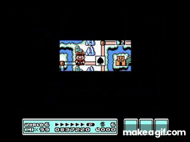

FÍSICA PARA
JOGOS
Dando peso, impacto e Game Feel aos seus componentes

FÍSICA REAL VS. DIVERTIDA
O jogo não é um simulador do mundo real.
Conceito: Na vida real, a inércia demora a parar (se você corre e para, você desliza). Em um jogo de ação, o jogador quer precisão.
A Regra: A física do jogo deve servir ao Game Feel, mesmo que signifique quebrar as leis de Isaac Newton. A resposta deve ser imediata.

Inércia Realista

Física Arcade (Precisa)
O KNOCKBACK COMPONENT
Isolando a responsabilidade de impacto.
Vamos criar um novo nó chamado KnockbackComponent.
Ele deve possuir variáveis de força e duração.
Esse componente será acoplado a inimigos e ao player (reutilizável).
Scene
A COMUNICAÇÃO (SIGNALS)
Fazendo os sistemas conversarem.
O Fluxo de Ação:
- O sistema detecta o ataque (Hitbox entra na Hurtbox).
- Dispara um Signal informando o impacto.
- O
LifeComponentreduz a vida. - O
KnockbackComponentescuta esse sinal, calcula a direção e envia uma força temporária para oMovementComponent.
Node (Signals)
area_entered(area: Area2D)
_on_trigger_area_entered() ..in LifeComponent
_on_trigger_area_entered() ..in KnockbackComponent